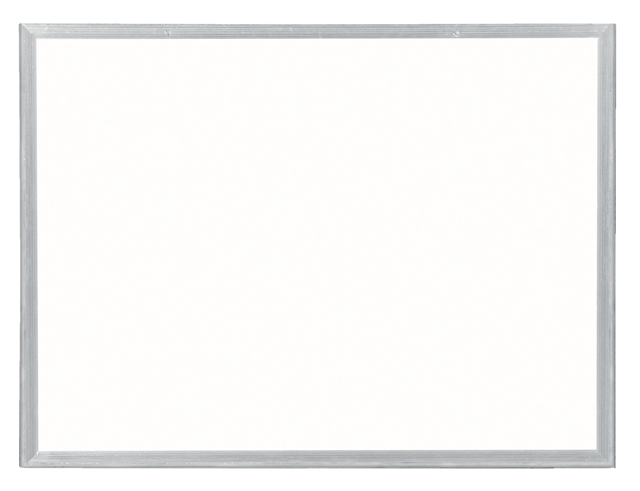

- 
Uma progressão aritmética (abreviadamente, P. A.) é uma sequência numérica
em que cada termo, a partir do segundo, é igual à soma do termo anterior
com uma constante r. A constante r é chamada de razão ou diferença comum
da progressão aritmética.Como podemos ver acima, O segundo termo (A2), é igual à soma do primeiro
termo (A1) com a constante "r". O terceiro termo (A3) é igual à soma do
segundo termo (A2) com a constante "r".
Para calcularmos a razão de uma progressão aritmética, basta diminuirmos
qualquer termo da sequência pelo seu antecessor.Ex: Observe a seguinte P.A.
(3,5,7,9)
A constante r pode ser calculada pela subtração do 4º termo (9) pelo termo
anterior (7). Assim como também pode ser calculada pelo 3º termo (7) menos
o 2º termo (5), ou ainda sim pelo 2º termo (5) menos seu antecessor, (3).
Em ambos os casos o valor da constante r é igual a 2.
Se em alguma das equações, a razão resultar em um valor diferente das
outras, a sequência não pode ser considerada uma P.A.
As progressões aritméticas podem ser classificadas de acordo com o valor da
razão r.
Se r > 0, então a PA é crescente.
Se r = 0, então a PA é constante.
Se r < 0, a PA é decrescente
O termo geral de uma P.A. serve para determinar qualquer termo da
progressão aritmética, usando-se a seguinte fórmula:
Onde:
an = termo a ser determinado
a¹ = primeiro termo da P.A.
n = número total de termos da progressão aritmética
r = razão
A soma dos n primeiros termos dessa P.A. é dada por:
Onde:
"a1" é o primeiro termo da P.A.
"an" é último termo a ser somado na P.A.
"n" é o número de termos a serem somados na P.A.